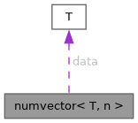
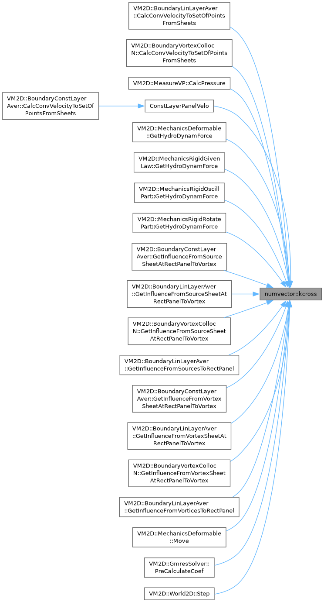
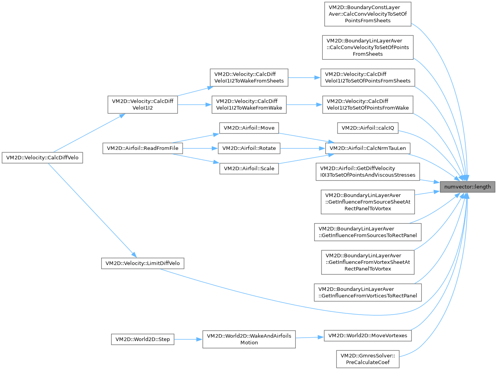
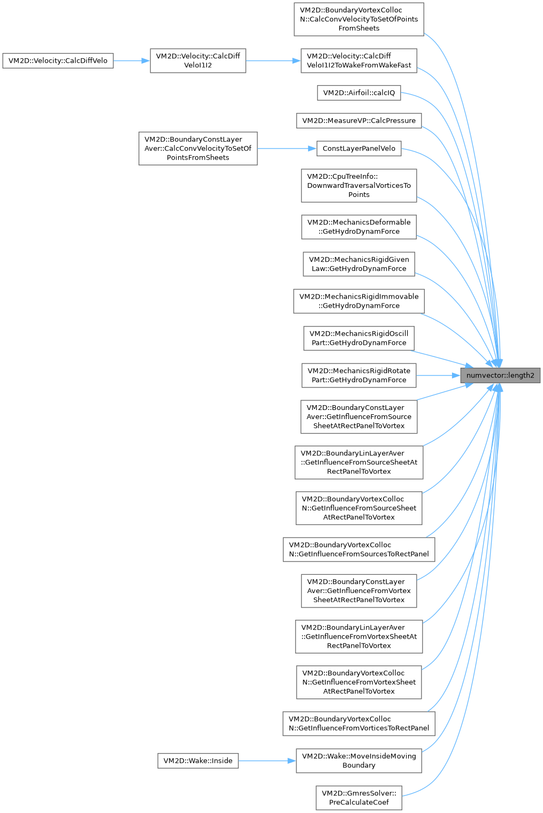
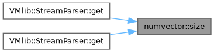
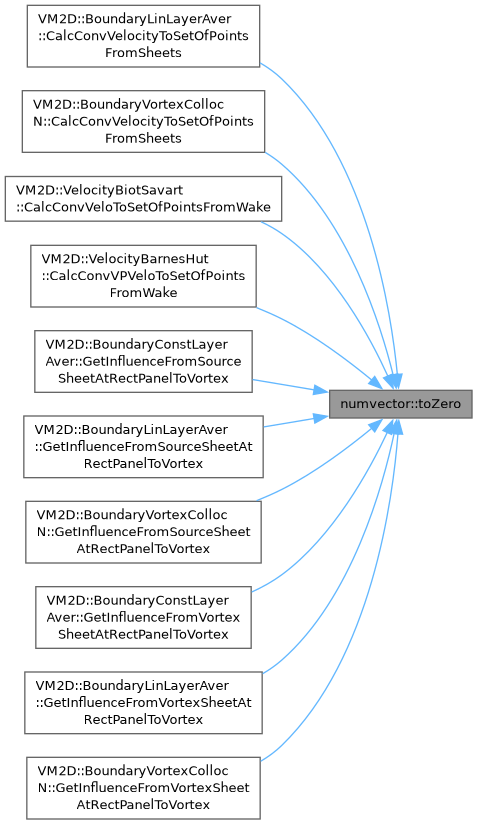
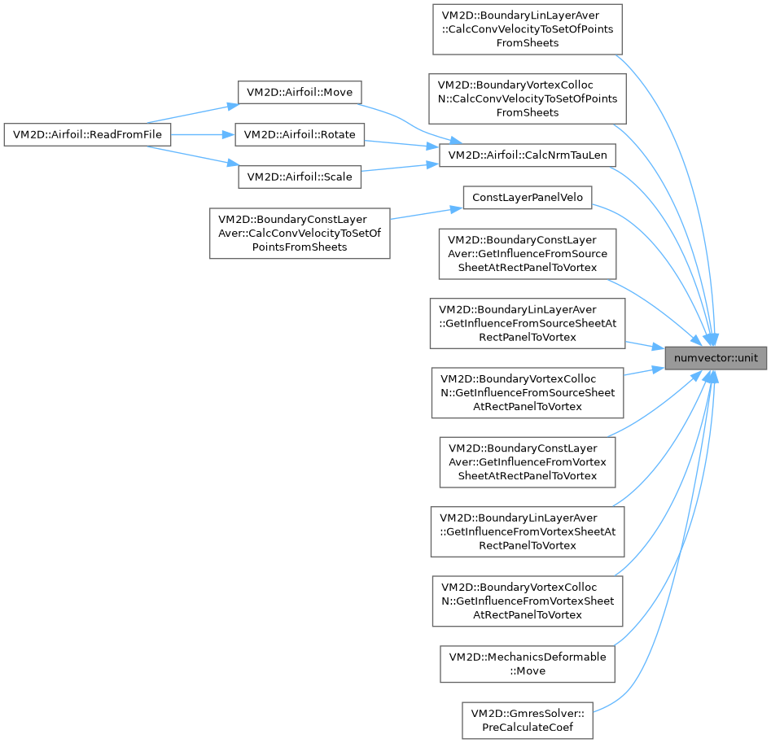

|
VM2D 1.14
Vortex methods for 2D flows simulation
|
|
VM2D 1.14
Vortex methods for 2D flows simulation
|
Шаблонный класс, определяющий вектор фиксированной длины
Фактически представляет собой массив, для которого определено большое количество различных операций.
Для доступа к элементам массива используется оператор [].
More...
#include <numvector.h>

Public Member Functions | |
| T & | operator[] (size_t i) |
| const T & | operator[] (size_t i) const |
| size_t | size () const |
| template<typename P> | |
| auto | operator& (const numvector< P, n > &y) const -> typename std::remove_const< decltype(this->data[0] *y[0])>::type |
| Оператор "&" скалярного умножения | |
| template<typename P> | |
| auto | operator^ (const numvector< P, 3 > &y) const -> numvector< typename std::remove_const< decltype(this->data[1] *y[2])>::type, 3 > |
| Оператор "^" векторного произведения | |
| template<typename P> | |
| auto | operator^ (const numvector< P, 2 > &y) const -> typename std::remove_const< decltype(this->data[0] *y[1])>::type |
| Оператор "^" вычисления третьей компоненты векторного произведения | |
| template<typename P> | |
| numvector< T, n > & | operator*= (P c) |
| Оператор "*=" домножения вектора на действительное число | |
| template<typename P> | |
| numvector< T, n > & | operator/= (P c) |
| Оператор "/=" деления вектора на действительное число | |
| template<typename P> | |
| numvector< T, n > & | operator+= (const numvector< P, n > &y) |
| Оператор "+=" прибавления другого вектора | |
| template<typename P> | |
| numvector< T, n > & | operator-= (const numvector< P, n > &y) |
| Оператор "-=" вычитания другого вектора | |
| template<typename P> | |
| auto | operator+ (const numvector< P, n > &y) const -> numvector< typename std::remove_const< decltype(this->data[0]+y[0])>::type, n > |
| Оператор "+" сложения двух векторов | |
| const numvector< T, n > & | operator+ () const |
| Оператор "+" унарного плюса | |
| template<typename P> | |
| auto | operator- (const numvector< P, n > &y) const -> numvector< typename std::remove_const< decltype(this->data[0] - y[0])>::type, n > |
| Оператор "-" вычитания двух векторов | |
| numvector< T, n > | operator- () const |
| Оператор "-" унарного минуса | |
| template<typename P> | |
| auto | operator* (const P c) const -> numvector< typename std::remove_const< decltype(this->data[0] *c)>::type, n > |
| Оператор "*" умножения вектора на число (вектор слева, число справа). | |
| template<typename P> | |
| bool | operator== (const numvector< P, n > &y) const |
| Оператор "==" логического равенства | |
| template<typename P> | |
| bool | operator!= (const numvector< P, n > &y) const |
| Перегрузка оператора "!=" логического неравенства | |
| auto | norm1 () const -> typename std::remove_const< typename std::remove_reference< decltype(this->data[0])>::type >::type |
| Вычисление 1-нормы вектора | |
| auto | norminf () const -> typename std::remove_const< typename std::remove_reference< decltype(this->data[0])>::type >::type |
| Вычисление inf-нормы вектора | |
| template<typename P = double> | |
| P | length () const |
| Вычисление 2-нормы (длины) вектора | |
| auto | length2 () const -> typename std::remove_const< typename std::remove_reference< decltype(this->data[0])>::type >::type |
| Вычисление квадрата нормы (длины) вектора | |
| template<typename P = double> | |
| auto | unit (P newlen=1) const -> numvector< typename std::remove_const< decltype(this->data[0] *newlen)>::type, n > |
| Вычисление орта вектора или вектора заданной длины, коллинеарного данному | |
| template<typename P = double> | |
| void | normalize (P newlen=1.0) |
| Нормирование вектора на заданную длину | |
| template<typename P> | |
| size_t | member (const P &s) const |
| Проверка вхождения элемента в вектор | |
| template<typename P> | |
| operator std::set< P > () const | |
| Приведение вектора к типу std::set. | |
| template<typename P> | |
| operator std::vector< P > () const | |
| Приведение вектора к типу std::vector. | |
| numvector< T, n > | rotateLeft (size_t k) const |
| "Вращение" вектора на несколько позиций влево | |
| numvector< T, 2 > | kcross () const |
| Геометрический поворот двумерного вектора на 90 градусов | |
| template<typename P = T> | |
| numvector< T, n > & | toZero (P val=0) |
| Установка всех компонент вектора в константу (по умолчанию — нуль). | |
| template<typename P = T> | |
| numvector< T, n > | proj (const numvector< P, n > &v) |
| Проекция вектора на вектор v. | |
| template<typename P> | |
| auto | dist2To (const numvector< P, n > &y) const -> typename std::remove_const< decltype(this->data[0] - y[0])>::type |
| Вычисление квадрата расстояния до другой точки | |
| template<typename R = double, typename P> | |
| R | distTo (const numvector< P, n > &y) |
| Вычисление расстояния между двумя точками | |
| numvector ()=default | |
| Пустой конструктор | |
| template<typename P> | |
| numvector (const P c) | |
| Конструктор, инициализирующий весь вектор одной и той же константой | |
| numvector (const numvector< T, n > &vec) | |
| Нешаблонный конструктор копирования | |
| template<typename P> | |
| numvector (const numvector< P, n > &vec) | |
| Шаблонный конструктор копирования | |
| template<typename P> | |
| numvector (const std::vector< P > &vec) | |
| Конструктор инициализации с помощью std::vector. | |
| numvector (const std::initializer_list< T > &z) | |
| Нешаблонный конструктор инициализации списком | |
| template<typename P> | |
| numvector (const std::initializer_list< P > &z) | |
| Шаблонный конструктор инициализации списком | |
| template<typename P, size_t p> | |
| numvector (const numvector< P, p > &vec, T add=0) | |
| Явный конструктор инициализации вектором другой размерности | |
| numvector< T, n > & | operator= (const numvector< T, n > &vec) |
| Нешаблонный оператор копирования | |
| template<typename P> | |
| numvector< T, n > | operator= (const numvector< P, n > &vec) |
| Шаблонный оператор копирования | |
Protected Attributes | |
| T | data [n] |
Шаблонный класс, определяющий вектор фиксированной длины
Фактически представляет собой массив, для которого определено большое количество различных операций.
Для доступа к элементам массива используется оператор [].
| T | тип элементов вектора |
| n | длина вектора |
Definition at line 98 of file numvector.h.
|
default |
Пустой конструктор
|
inlineexplicit |
Конструктор, инициализирующий весь вектор одной и той же константой
| P | тип данных присваиваемой константы |
| [in] | c | значение, которым инициализируются все компоненты вектора |
Definition at line 588 of file numvector.h.
|
inline |
Нешаблонный конструктор копирования
| T | тип данных компонент вектора |
| n | длина вектора |
| [in] | vec | константная ссылка на копируемый вектор |
Definition at line 601 of file numvector.h.
|
inline |
|
inline |
Конструктор инициализации с помощью std::vector.
| P | тип данных инициализирующего std::vector |
| n | длина вектора |
| [in] | vec | константная ссылка на инициализирующий вектор |
Definition at line 657 of file numvector.h.
|
inline |
Нешаблонный конструктор инициализации списком
| T | тип данных |
| [in] | z | константная ссылка на список инициализации |
Definition at line 673 of file numvector.h.
|
inline |
Шаблонный конструктор инициализации списком
| P | тип данных инициализирующего списка |
| [in] | z | константная ссылка на список инициализации |
Definition at line 690 of file numvector.h.
|
inlineexplicit |
Явный конструктор инициализации вектором другой размерности
| P | тип данных инициализирующего вектора |
| p | размерность инициализирующего вектора |
| [in] | vec | константная ссылка на инициализирующий вектор |
| [in] | add | элемент для заполнения при необходимости недостающих компонент (по умолчанию 0) |
Definition at line 710 of file numvector.h.
|
inline |
Вычисление квадрата расстояния до другой точки
| P | тип данных второй точки |
| [in] | y | константная ссылка на радиус-вектор второй точки |
Definition at line 559 of file numvector.h.
|
inline |
Вычисление расстояния между двумя точками
| P | тип данных второй точки |
| R | тип данных результата (по умолчанию double) |
| [in] | y | константная ссылка на радиус-вектор второй точки |
Definition at line 572 of file numvector.h.
|
inline |
Геометрический поворот двумерного вектора на 90 градусов
Исходный вектор при этом не изменяется
Эквивалентно умножению слева на орт третьей оси, т.е. \( \vec k \times \vec r \)
| T | тип данных |
Definition at line 511 of file numvector.h.

|
inline |
Вычисление 2-нормы (длины) вектора
Корень из скалярного квадрата вектора
| P | тип результата (по умолчанию double) |
Definition at line 374 of file numvector.h.

|
inline |
Вычисление квадрата нормы (длины) вектора
Скалярный квадрат вектора
Definition at line 386 of file numvector.h.

|
inline |
Проверка вхождения элемента в вектор
| P | тип данных проверяемого элемента |
| [in] | s | проверяемый элемент |
Definition at line 433 of file numvector.h.
|
inline |
Вычисление 1-нормы вектора
Сумма модулей компонент вектора
Definition at line 340 of file numvector.h.
|
inline |
Нормирование вектора на заданную длину
Если в качестве новой длины указано отрицательное число — у вектора будет изменено направление
| P | тип числа, задающего длину вектора |
| [in] | newlen | новая длина вектора (по умолчанию 1.0) |
Definition at line 419 of file numvector.h.
|
inline |
Вычисление inf-нормы вектора
Наибольшая по модулю компонента вектора
Definition at line 354 of file numvector.h.
|
inline |
Приведение вектора к типу std::set.
| P | тип данных компонент множества |
Definition at line 449 of file numvector.h.
|
inline |
Приведение вектора к типу std::vector.
| P | тип данных компонент std::vector |
Definition at line 463 of file numvector.h.
|
inline |
Перегрузка оператора "!=" логического неравенства
| P | тип данных компонент вектора, с которым производится сравнение |
| n | длина вектора |
| [in] | y | константная ссылка на сравниваемый вектор |
Definition at line 327 of file numvector.h.
|
inline |
Оператор "&" скалярного умножения
| P | тип данных компонент вектора - второго сомножителя |
| n | длина обоих векторов |
| [in] | y | константная ссылка на второй множитель |
Definition at line 126 of file numvector.h.
|
inline |
Оператор "*" умножения вектора на число (вектор слева, число справа).
| P | тип данных множителя |
| n | длина вектора |
| [in] | c | число-множитель |
Definition at line 270 of file numvector.h.
|
inline |
Оператор "*=" домножения вектора на действительное число
| T | тип данных компонент вектора |
| P | тип данных множителя |
| n | длина вектора |
| [in] | c | числовой множитель типа, приводимого к типу компонент вектора |
Definition at line 175 of file numvector.h.
|
inline |
Оператор "+" унарного плюса
| T | тип данных компонент вектора |
| n | длина вектора |
Definition at line 298 of file numvector.h.
|
inline |
Оператор "+" сложения двух векторов
| P | тип данных компонент вектора - второго слагаемого |
| n | длина вектора |
| [in] | y | константная ссылка на прибавляемый вектор |
Definition at line 238 of file numvector.h.
|
inline |
Оператор "+=" прибавления другого вектора
| T | тип данных компонент вектора |
| P | тип данных компонент прибавляемого вектора |
| n | длина вектора |
| [in] | y | константная ссылка на прибавляемый вектор |
Definition at line 207 of file numvector.h.
|
inline |
|
inline |
Оператор "-" вычитания двух векторов
| P | тип данных компонент вектора - вычитаемого |
| n | длина вектора |
| [in] | y | константная ссылка на вычитаемый вектор |
Definition at line 254 of file numvector.h.
|
inline |
Оператор "-=" вычитания другого вектора
| T | тип данных компонент вектора |
| P | тип данных компонент вычитаемого вектора |
| n | длина вектора |
| [in] | y | константная ссылка на вычитаемый вектор |
Definition at line 223 of file numvector.h.
|
inline |
Оператор "/=" деления вектора на действительное число
| T | тип данных компонент вектора |
| P | тип данных множителя |
| n | длина вектора |
| [in] | c | числовой делитель типа, приводимого к типу компонент вектора |
Definition at line 191 of file numvector.h.
|
inline |
|
inline |
Нешаблонный оператор копирования
| T | тип данных компонент вектора |
| n | длина вектора |
| [in] | vec | константная ссылка на копируемый вектор |
Definition at line 627 of file numvector.h.
|
inline |
Оператор "==" логического равенства
| P | тип данных компонент вектора, с которым производится сравнение |
| n | длина вектора |
| [in] | y | константная ссылка на сравниваемый вектор |
Definition at line 311 of file numvector.h.
|
inline |
Definition at line 104 of file numvector.h.
|
inline |
Definition at line 109 of file numvector.h.
|
inline |
Оператор "^" вычисления третьей компоненты векторного произведения
Определен только для двумерных векторов
| P | тип данных компонент вектора - второго множителя |
| [in] | y | константная ссылка на второй множитель |
Definition at line 161 of file numvector.h.
|
inline |
Оператор "^" векторного произведения
Определен только для трехмерных векторов
| P | тип данных компонент вектора - второго сомножителя |
| [in] | y | константная ссылка на второй множитель |
Definition at line 143 of file numvector.h.
|
inline |
Проекция вектора на вектор v.
| T | тип данных компонент вектора |
| P | тип данных константы |
| n | длина вектора |
| v | вектор, на который проецируем |
Definition at line 544 of file numvector.h.
|
inline |
"Вращение" вектора на несколько позиций влево
Исходный вектор при этом не изменяется
| T | тип данных компонент вектора |
| n | длина вектора |
| [in] | k | количество позиций, на которые производится "вращение" |
Definition at line 481 of file numvector.h.
|
inline |
Definition at line 114 of file numvector.h.

|
inline |
Установка всех компонент вектора в константу (по умолчанию — нуль).
| T | тип данных компонент вектора |
| P | тип данных константы |
| n | длина вектора |
| [in] | val | константа, значению которой приравниваются все компоненты вектора (по умолчанию 0) |
Definition at line 528 of file numvector.h.

|
inline |
Вычисление орта вектора или вектора заданной длины, коллинеарного данному
Если в качестве новой длины указано отрицательное число — вектор будет противоположно направленным
| P | тип числа, задающего длину вектора |
| [in] | newlen | длина получаемого вектора (по умолчанию 1.0) |
Definition at line 402 of file numvector.h.

|
protected |
Definition at line 101 of file numvector.h.